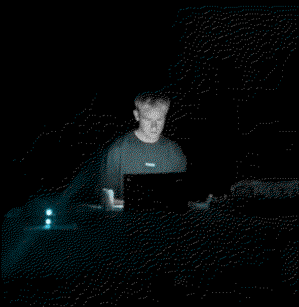

Guðmundur Arnalds
 Musician, anthropology student, laptop nomad, sound enjoyerlatest releases
latest mix
Currently:
Finishing some things and a bit of travelRecent posts & changes
240116 - New Album - Nautnir Þrjár240116 - A Day of Glupsk
240108 - Keeping up with 23/24
240107 - Minor updates to bio, shows, and discography
230519 - MENGI New York and trio show with Skúli Sverrisson & John McCowen
230505 - Agalma XIII
230417 - Lisbon, casette & a mix
230403 - New mix for Radio Quântica
230329 - Upcoming shows, recent interview and some books
230319 - archive mix 1
230317 - Added discography
230315 - First post - a recent radio interview